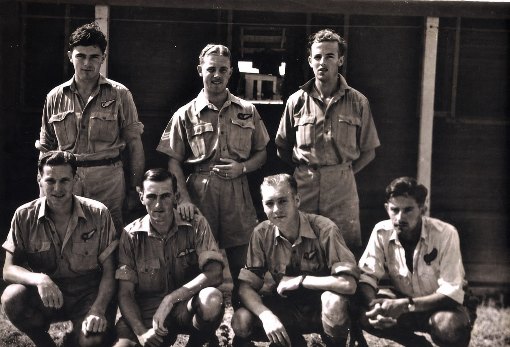
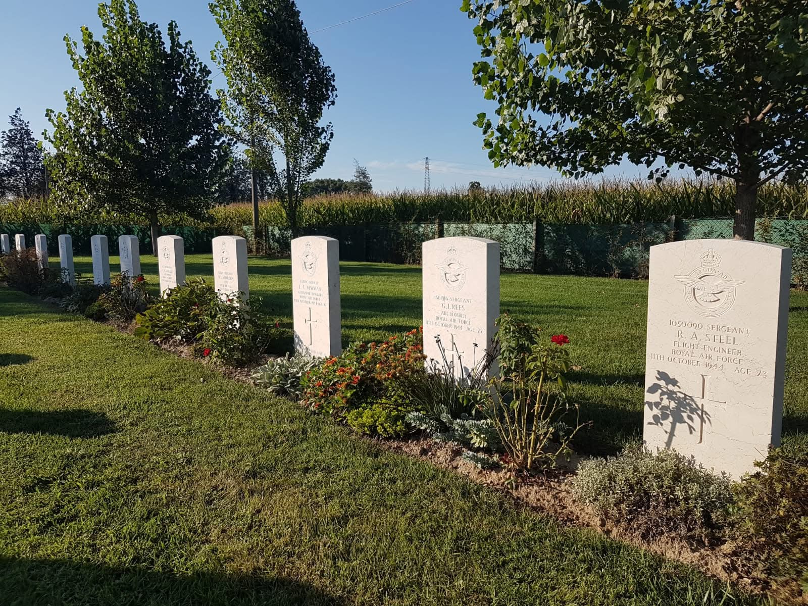

Introduzione. Una domanda che spesso viene rivolta a chi, per professione o per semplice passione, si dedica alla ricerca storica è:”perché?”. Il più delle volte il motivo per cui viene posta questa domanda è il fatto che al giorno d’oggi può sembrare impossibile che in un mondo così proiettato al futuro , dove la frenesia della vita di tutti i giorni ci travolge, ci possa essere qualcuno capace di trovare e/o sacrificare del proprio tempo nel “presente” per qualcosa accaduto e che appartiene al “passato”. Sembra impossibile che in un mondo come quello di oggi dove l’indifferenza generale ci porta ad ignorare perfino il vicino di casa, ci sia qualcuno a cui invece possa interessare cosa nasconda il nome e cognome di una persona “qualunque” vissuta anni, decenni, secoli, fa. Appare strano che, in un mondo come il nostro dove il prestigio di una persona sembra dipendere dal possesso di oggetti supertecnologici ed il cui valore svanisce nel giro di pochi mesi, ci possa essere invece qualcuno che consideri di importanza inestimabile la raccolta e conservazione di oggetti antichi, consumati dal tempo, di uso comune, ma capaci di raccontare una storia, una qualsiasi storia, di uomini e donne che non ci sono più. Cosa spinge certe persone quindi a chiudersi in polverosi archivi ficcando il naso in faldoni, documenti e scartoffie? Cosa spinge certe persone a macinare km in auto o scalare montagne, scarpinare nei boschi, raggiungere i luoghi più strani ed impervi pur di raccogliere testimonianze ascoltandole con le proprie orecchie dalle voci di testimoni oculari o raccoglierle con lo sguardo dai luoghi che a certi eventi hanno fatto da sfondo? Ci spinge il fatto e la consapevolezza che la Storia non sia solamente e semplicemente un qualcosa di astratto, tagliato a fette, diviso in scompartimenti stagni separati uno dall’altro e soprattutto scollegati dalla nostra vita di tutti i giorni, dal luogo dove viviamo, da ciò che siamo. Se ci avviciniamo alla Storia con attenzione e curiosità di conoscere, osservare, capire, ci accorgeremmo di come e quanto gli avvenimenti e le persone, dal passato, possano arrivare a coinvolgere emotivamente, nel presente, uomini e donne di tutto il mondo. “La storia è un grande presente e mai solamente un passato”. Il racconto che segue è frutto di un lavoro di ricerca, intrapreso dall'Associazione Aerei Perduti Polesine e portato avanti in collaborazione con l'Associazione Historica Legio, che ha permesso di ricostruire un ponte tra avvenimenti accaduti nel 1944 ed i giorni nostri. Ha permesso di ricostruire un ponte tra continenti agli antipodi. Ha permesso di ricostruire un ponte tra un nipote ed il suo zio di cui possedeva solo una foto. Tutto ciò che segue è basato su documenti, testimonianze e sopralluoghi. Nulla è frutto di fantasia o personale interpretazione. Ciò che segue è la più semplice risposta alla domanda che spesso ci viene posta: ”perché?”.

Prima Parte: La missione
Ottobre 1944, l’Italia divorata dalla guerra vede le truppe alleate impegnate sulla Linea Gotica a contendere montagna dopo montagna, paese dopo paese, il terreno alle truppe Tedesche. Sulle teste di quei soldati, giorno e notte, si combatteva infatti un’altra guerra: centinaia erano gli aerei alleati che, dalle basi nel Sud Italia, sorvolavano, risalendo, la penisola per azioni di pattuglia o bombardamento sulle città del Nord Italia. Il 178° squadrone della RAF, con base ad Amendola, in Puglia, era uno di questi reparti impegnati in missioni di bombardamento e dopo aver passato in relativa tranquillità la giornata del 9 ottobre, si preparava a ritornare in azione per il giorno 10, con l’operazione n° 277: l’obbiettivo era Verona. Secondo le informazioni ricevute, dal Brennero erano state raccolti a Verona circa 500 mezzi militari che sarebbero dovuti andare a supporto delle truppe tedesche impegnate nei combattimenti di difesa della Linea Gotica: bisognava assolutamente impedire che arrivassero al fronte. Bisognava distruggerli. Il piano operativo dell’operazione “277” prevedeva l’impiego di 11 bombardieri divisi in 2 formazioni: “A” e “B”. Il decollo era programmato alle ore 21.29, il raggiungimento dell’obbiettivo intorno alle ore 00.00 ed il rientro alla base previsto per le ore 03.00. La resistenza che ci si aspettava era considerata molto forte: Verona, data la sua posizione strategica, era difesa con estrema forza. Arrivò la sera del 10 ottobre e gli 11 bombardieri erano pronti sulla pista. 11 bombardieri, 11 equipaggi. Sul Piano dettagliato dell’operazione consegnato nelle mani degli Ufficiali, ogni bombardiere era indicato da una sigla identificativa: due lettere ed un numero a cui seguiva la lista di 8 nomi,8 ragazzi poco più che ventenni, l’equipaggio. Uno di quei bombardieri sulla pista di Amendola, quella sera, assegnato alla formazione “B”, era il b24 “Liberator” con sigla EW106.

Ai comandi del “Liberator” EW106 vi erano gli ufficiali Morrison e l'australiano Hamilton, supportati dagli altri membri dell’equipaggio: l’ingegnere di volo Steel, il navigatore Newman, l’operatore radio e mitragliere Ashmore, il mitragliere Ames, l’altro mitragliere Lawless ed infine il puntatore addetto allo sgancio delle bombe Rees. Il 10 ottobre del 1944, alle ore 21.29 il primo degli 11 aerei che parteciparono alla missione n° 277 decollò. Alle ore 21.32 venne il turno del Tenente Morrison e del suo equipaggio: staccare le ruote dal suolo pugliese, dirigendosi verso nord, incontro al proprio destino che lo attendeva tra i 6400 ed 8000 piedi di altezza, sopra i cieli di Verona. Il volo di avvicinamento fu abbastanza tranquillo, anche se uno degli 11 aerei ebbe dei problemi in volo e dovette rinunciare alla missione. Alle ore 00.00 del giorno 11, si arrivò sopra l’obbiettivo: fu subito l’inferno. Circa una ventina di postazioni di contraerea “pesante” aprirono il fuoco e supportate da parecchie altre “leggere” e da 20-30 postazioni di traccianti, illuminarono “a giorno” il cielo. Il b24 EW106, nel vortice di quell’inferno, non fece in tempo a sganciare nemmeno una delle bombe nascoste nel suo ventre. Colpito nei momenti iniziali della battaglia, venne avvolto subito dalle fiamme ed iniziò a precipitare senza controllo verso le colline a nord della città. Nessuno dei ragazzi a bordo ebbe il tempo di lanciarsi con il paracadute. L’aereo carico di bombe precipitò come una palla di fuoco andando a schiantarsi in un esplosione spaventosa incendiando la collina e le cui fiamme illuminarono l’intera notte insieme a quelle che brillavano tremolando dalla città vittima delle bombe. La battaglia sui cieli di Verona duro circa un’ora. Quella notte vennero sganciate sulla città, secondo rapporto di debriefing, il seguente quantitativo di bombe: - 56 x 1000lbs G.I. 0.25 - 4 x 2000 lbs T.I. - 24 x 500 lbs incendiarie. Alle ore 3.23 am del giorno 11 ottobre, nove b24 della RAF rientrarono alla base. Il “Liberator” EW 106, come recita il rapporto della missione:” FAILED TO RETURN TO BASE”.
Seconda Parte: Le ali spezzate
L’alba di un altro giorno di guerra, quella dell’11 ottobre 1944, si affacciava su Verona e sulle ferite dell’ennesimo attacco aereo subito dalla città. Quando i primi civili arrivarono sul luogo del disastro, Le luci del giorno stavano timidamente facendo la loro comparsa, prendendo il posto dei bagliori che durante la notte avevano avvolto il versante della collina dove si era schiantato quel “colosso” con le ali,il b24 “Liberator” EW106 Quello che si presentò davanti ai loro occhi fu qualcosa di apocalittico anche per chi viveva ormai quotidianamente l’orrore di una guerra: quello che videro non lo dimenticarono mai più. Le dimensioni dell’aereo, la quantità di carburante, il carico di bombe che non erano ancora state sganciate al momento in cui l’aereo si schiantò, causarono un’esplosione ed un incendiò che coinvolse una parte notevole di collina. Una delle prime cose che colpiva come un pugno nello stomaco chi si presentò sul posto era l’odore. Odore di benzina, odore di bruciato. Alcune delle bombe inesplose si vedevano tra i rottami fumanti. L’aereo colpendo in un primo momento la parte alta della collina era poi franato con tutti i suoi pezzi verso il fondo di un canalone. Girando tra le lamiere contorte ed i rottami, si videro poi i corpi o quel che restava di loro. Vennero subito trovati i resti di 6 persone con le divise verde oliva. I volti sfigurati, i corpi straziati. L’odore della carne bruciata era insopportabile. In mezzo a tutto quello sfacello, in mezzo a quel disastro, la difficoltà stessa non solo di identificare, ma anche di quantificare il morti, si rese fin da subito concreta. Solo in secondo momento ci si accorse che al conteggio dei primi sei cadaveri ritrovati, se ne sarebbero aggiunti altri due. Ad un primo pietoso sguardo di quei corpi straziati, uno di essi si trovava ancora seduto, legato al suo sedile, in posizione perfettamente eretta. Il viso fanciullesco ed i lunghi capelli di un altro di quei caduti, fece addirittura sparger la voce infondata che a bordo ci potesse esser stata una donna. Nel frattempo le persone arrivate sul posto si affrettarono a raccogliere tutto ciò che avrebbe potuto avere un qualche valore: la guerra era nel vivo e la fame era tanta. Bisognava sopravvivere e l’alluminio aereonautico o la stoffa dei paracadute erano risorse tanto inaspettate quanto preziose e bisognava fare presto a raccoglierle e sparire, prima che arrivassero i tedeschi e l’RSI a circondare la zona. La pietà umana raccolse i resti dei primi 6 caduti e dei frati si fecero carico del trasporto dei corpi al cimitero monumentale di Verona dove vennero sepolti il 12 ottobre. I due corpi mancanti rinvenuti in un secondo momento, vennero seppelliti per necessità sullo stesso luogo del ritrovamento per poi essere riesumati nei giorni successivi e fatti ricongiungere con i loro compagni, con i quali tutt’oggi riposano al cimitero militare di Padova. Tutti insieme, di nuovo uniti, per sempre.

Il 13 ottobre 1944, la fredda burocrazia militare, raccoglieva i nominativi ed indirizzi a cui, secondo la volontà dei giovani avieri caduti, sarebbero stati recapitati i telegrammi con la notizia del loro abbattimento e della loro morte. Morrison volle che nel caso in cui gli fosse accaduto il peggio, venisse informata la madre, ad Edimburgo. Hamilton decise che venisse contattato il padre, a Burwood, Victoria, nella lontana Australia. Steel volle che la notizia fosse recapitata a suo padre ed anche alla signorina Fulcher nei pressi di Norwich, Norfolk, che sebbene nei documenti venisse indicata semplicemente come amica, per quel ragazzo, lei, doveva essere veramente importante. Newman indicò il padre e la fidanzata, la signorina Stevens come destinatari di un eventuale tragica notizia. Ashmore indicò anche lui il padre e la fidanzata, la signorina Collins. Ames volle che fosse informato il padre, che si trovava ad Alessandria in Egitto. Rees volle che in caso gli fosse accaduto qualcosa di brutto, ne venisse informato il padre e la sorella, la signora Davies. Lawless decise che fosse suo padre, a Liverpool, a ricevere la peggiore delle notizie qualora qualcosa di brutto gli fosse accaduto… Purtroppo quel qualcosa di brutto era inesorabilmente accaduto ed il 13 ottobre quei telegrammi che nessuno avrebbe mai voluto ricevere, vennero compilati con i nomi e gli indirizzi di quelle persone così tanto care a quei giovani ragazzi che ormai non c’erano più: giovani ”Ali spezzate”. Dato che l’identificazione delle salme fu impossibile e l’unica cosa sicura fu l’appartenenza di quelle spoglie agli 8 membri dell’equipaggio del b24 EW 106, le sepolture avvennero senza la certezza che ad ogni lapide che oggi li ricorda uno per uno, corrispondesse la pietosa custodia delle povere ossa proprio dell’aviere a cui fa riferimento il nome inciso sulla pietra, piuttosto che i mortali resti di un altro suo compagno o addirittura di più di uno di loro, insieme. Ognuna di quelle 8 lapidi ricorda chi fosse ognuno di loro. Ognuna di quelle 8 tombe probabilmente custodisce un po’ di tutti loro.
Terza Parte: Ai nostri giorni
Burwood, Australia, primi di settembre del 2019.
Erano già passati parecchi giorni da quando alla redazione del Burwood Bulletin era arrivata una mail piuttosto insolita, diversa dalle altre e, fatto ancor più inconsueto, inviata dall’Italia.
Un ricercatore italiano, appassionato di storia, Alessandro Cianchetta ,membro dell’Associazione Aerei Perduti Polesine, insieme a Matteo Zamana dell’Associazone Historica Legio, cercavano di rintracciare i parenti di un certo Stewat Hamilton, di Burwood appunto, Australia.
Stewart Hamilton, W.O. della RAAF era stato abbattuto insieme ai suoi compagni di equipaggio, mentre era impegnato in Italia in una missione di guerra sui cieli di Verona, a bordo di un bombardiere b24 “Liberator”.
Nel loro lavoro di ricerca, gli italiani avevano trovato riscontro di quanto scovato negli archivi della RAF, nelle testimonianze di persone che, seppur bambini nel 1944,ne hanno custodito fino ad oggi un ricordo ancora vivido.
Incrociando i documenti della Raf con le testimonianze degli anziani, i ricercatori riuscirono a localizzare il preciso punto di impatto del bombardiere, dove vennero recuperati piccoli pezzi di alluminio aeronautico, equipaggiamento e altre parti meccaniche che in modo inequivocabile confermavano l’identità dell’aereo a cui erano riconducibili.
In seguito a questi ritrovamenti, i ricercatori italiani avevano pensato di rintracciare e contattare i parenti dei caduti per far si che venissero messi a conoscenza del luogo esatto dove i loro cari avevano perso la vita, in modo da permettere, un domani, di deporvi un fiore e manifestando poi l’intenzione di consegnare nelle mani dei familiari, i piccoli pezzi ritrovati dell’aereo su cui Stewart Hamilton aveva perso la vita.
Questa mail, incuriosì ed entusiasmò fin da subito la redazione ed una giornalista di nome Raine si prese in carico la ricerca.
Fin da subito non fu semplice per Raine e la redazione del giornale reperire notizie riguardo a Stewart Hamilton ed alla sua famiglia. Per un lungo periodo la ricerca sembrò impantanarsi in un piatto silenzio.
Alla redazione venne un’idea: inserire Stewart Hamilton nella pagina delle persone scomparse dell’Herald Sun. Forse era l’ultima possibilità di rintracciare un parente di un militare della seconda guerra mondiale dopo più di 70 anni dalla sua scomparsa. Raine lasciò il suo numero di telefono come riferimento per eventuali segnalazioni.
Il tempo passava e nessuna segnalazione era arrivata in redazione: nessuno sembrava ricordarsi di Stewart Hamilton
Una sera come altre, il telefono di Raine squillò e la giornalista sollevò il ricevitore chiedendo come di consueto: ”chi parla?”.
Dopo qualche secondo di silenzio, la risposta che ricevette dall’altra parte del telefono, la lasciò stupita e senza fiato…
“Sono Stewart Hamilton...”
La voce maschile sembrava rimbombare nel silenzio di quella tarda sera di settembre. I secondi che seguirono a quella presentazione sembrarono eterni.
“Come era possibile?” si domandava Raine: Stewart Hamilton è morto il 10 ottobre del 1944 ed è sepolto nel cimitero di Padova!
Rompendo il silenzio di quegli attimi in cui le domande riempivano la testa della ragazza, la voce maschile continuò:
“Sono Stewart James Hamilton, nipote di Stewart Alfred Hamilton, il pilota della RAAF di cui state cercando i parenti. Stewart era mio zio".
La “finestra” tra il 1944 ed il 2019 era stata spalancata!
Un filo invisibile collegava persone che non si erano mai conosciute, lontane nel tempo, nelle distanze, ma vicine da questo momento come se fossero sedute uno di fronte all’altra.
“La storia è un grande presente, e mai solamente un passato”.
Questa vicenda non aveva tuttavia terminato di sorprenderci e regalarci emozioni. Qualche anno dopo la diffusione della storia del B-24 EW106, ricevemmo una mail che ci riempì il cuore di emozione. Il testo diceva esattamente queste parole:
"Ho trovato questo articolo sul vostro sito.
Sono il nipote del Flight Sergeant Reg Steel, morto a bordo del bombardiere B-24 Liberator che fu abbattuto sopra Verona nel 1944. All’epoca avevo sei anni. La mia famiglia era seduta a tavola per il pasto quando arrivò il telegramma che ci informava che era morto in combattimento. Ci sono voluti 80 anni per conoscere tutta la storia, ma grazie al vostro articolo sento finalmente di aver chiuso il cerchio. Questo è un ringraziamento tardivo alle persone che si presero cura dei resti di queste «ali spezzate», come le avete poeticamente definite, e anche un modo per esprimere la mia solidarietà a chi oggi ricorda di essere stato bombardato dagli inglesi.
Ora so che le bombe non colpiscono sempre il bersaglio, ma a soffrirne è la popolazione civile. Anch’io sono stato bombardato dalla Luftwaffe. Sono rimasto sbalordito dal fatto che aveste accesso alle fotografie, perché credo che sia stato Reg a scattarle. Continuate così e buon lavoro. M.S. Lowestoft, Suffolk, Inghilterra"
Conclusioni e ringraziamenti
- Ricerca e ricostruzione eseguita in collaborazione tra le associazioni Historica Legio ed Aerei Perduti, nelle persone di Alessandro Cianchetta (Aerei Perduti) e Matteo Zamana (Historica Legio). Fondamentale si è rivelato anche il contributo di Mirco Caporali che anni fa ha iniziato le prime ricerche su questo velivolo.
Si ringraziano in particolare modo per il contributo dato nella ricostruzione di questi avvenimenti storici:
- Bruna e Francesca Cipriani (ristorante “LA COLA") per le testimonianze storiche e per l’appoggio logistico durante le ricerche sul territorio.
- Mario Avesani per le testimonianze.
- Raine, Alan, Susan e tutta La redazione del Burnwood Bullettin per il contributo dato nella ricerca in Australia.
Hai ulteriori notizie o contributi riguardo al contenuto di questo articolo? Ci sono vicende storiche che ti riguardano da vicino e vuoi portare una testimonianza? Contattaci all'indirizzo historicalegio@gmail.com.